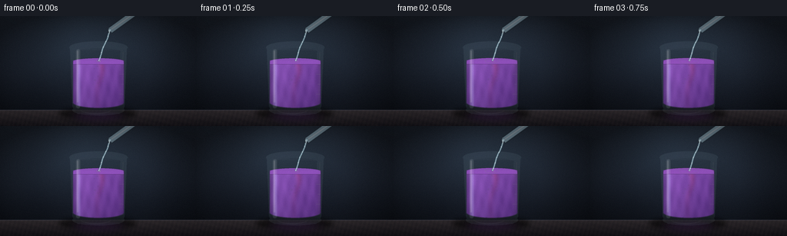
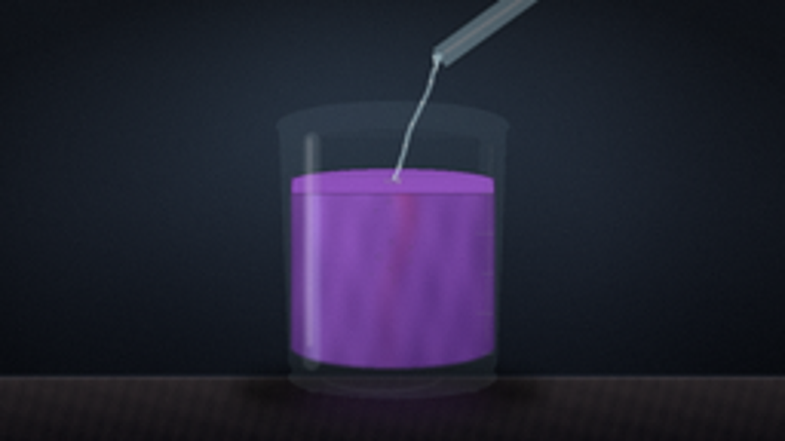
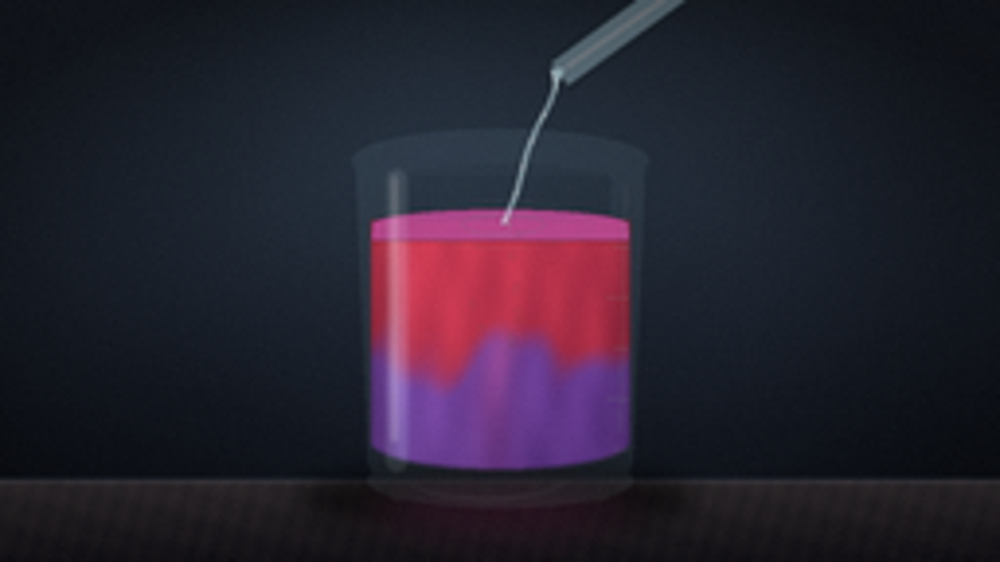
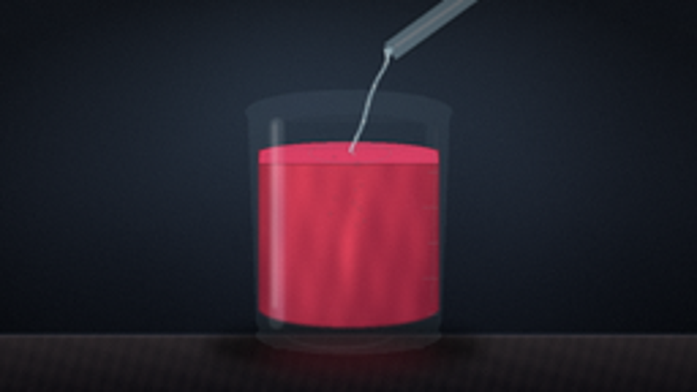
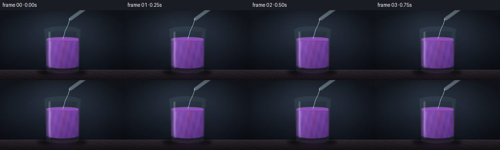
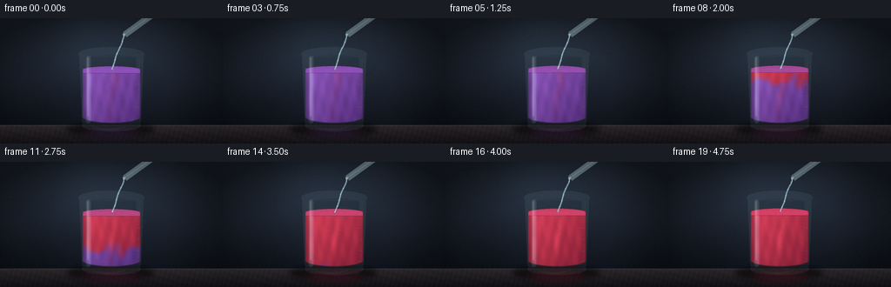

CODING AGENTS AS PIXEL WORLD MODELS
traex/DeepSeek-V4.1-Flash · phygen_147
点击播放 · 原生 RGB 像素
逐轮保存的候选
回放视频、检查图与代码变化。
每份候选均可单独播放。实际图片检查记录在下方工具轨迹中。
候选 01播放与检查图
点击播放 · 原生 RGB 像素

展开代码变化
--- 上一保存版本
+++ 本次保存版本
@@ -0,0 +1,368 @@
+"""Procedural RGB video: acid turns purple litmus solution red."""
+
+from pathlib import Path
+import math
+
+import numpy as np
+from PIL import Image, ImageDraw, ImageFilter
+
+import artifact_io
+
+
+WIDTH, HEIGHT = 256, 144
+FRAMES = 20
+FPS = 4.0
+SS = 4 # Supersampling factor.
+RW, RH = WIDTH * SS, HEIGHT * SS
+
+
+def sc(value):
+ return int(round(value * SS))
+
+
+def smoothstep(edge0, edge1, value):
+ unit = np.clip((value - edge0) / (edge1 - edge0), 0.0, 1.0)
+ return unit * unit * (3.0 - 2.0 * unit)
+
+
+def alpha_layer():
+ layer = Image.new("RGBA", (RW, RH), (0, 0, 0, 0))
+ return layer, ImageDraw.Draw(layer)
+
+
+def composite(base, layer):
+ return Image.alpha_composite(base, layer)
+
+
+def background():
+ yy, xx = np.mgrid[0:RH, 0:RW].astype(np.float32)
+ yn = yy / (RH - 1)
+ xn = xx / (RW - 1)
+
+ top = np.array([31.0, 37.0, 48.0], dtype=np.float32)
+ bottom = np.array([16.0, 20.0, 28.0], dtype=np.float32)
+ rgb = top[None, None, :] * (1.0 - yn[:, :, None]) + bottom[None, None, :] * yn[:, :, None]
+
+ # Cool studio light behind the glass.
+ glow = np.exp(-(((xn - 0.46) / 0.34) ** 2 + ((yn - 0.24) / 0.34) ** 2))
+ rgb += glow[:, :, None] * np.array([10.0, 15.0, 18.0], dtype=np.float32)
+
+ # Soft wall bands give the empty background depth without competing with the beaker.
+ wall = 2.4 * np.sin(xn * 18.0 + 0.8) + 1.5 * np.cos(yn * 13.0)
+ rgb += wall[:, :, None] * np.array([0.30, 0.36, 0.46], dtype=np.float32)
+
+ vignette = np.clip(1.18 - 0.60 * ((xn - 0.5) ** 2 * 2.4 + (yn - 0.5) ** 2 * 3.0), 0.60, 1.08)
+ rgb *= vignette[:, :, None]
+
+ # Dark stone work surface.
+ bench_top = 123.0
+ bench_mask = yy >= bench_top * SS
+ bench_t = np.clip((yy / SS - bench_top) / (HEIGHT - bench_top), 0.0, 1.0)
+ bench = np.array([47.0, 42.0, 45.0])[None, None, :] * (1.0 - bench_t[:, :, None])
+ bench += np.array([21.0, 19.0, 24.0])[None, None, :] * bench_t[:, :, None]
+ grain = 2.6 * np.sin(xx / SS * 1.1 + yy / SS * 0.32) + 1.7 * np.sin(xx / SS * 0.23 - yy / SS * 0.8)
+ bench += grain[:, :, None] * np.array([0.8, 0.62, 0.55])
+ rgb[bench_mask] = bench[bench_mask]
+
+ # A narrow edge catches the room light.
+ edge = np.exp(-((yy / SS - bench_top) / 0.75) ** 2)
+ rgb += edge[:, :, None] * np.array([14.0, 16.0, 20.0], dtype=np.float32)
+ return Image.fromarray(np.clip(rgb, 0, 255).astype(np.uint8), "RGB").convert("RGBA")
+
+
+def rounded_mask(box, radius):
+ mask = Image.new("L", (RW, RH), 0)
+ draw = ImageDraw.Draw(mask)
+ draw.rounded_rectangle(tuple(sc(v) for v in box), radius=sc(radius), fill=255)
+ return mask
+
+
+def draw_shadow(image, tint, strength):
+ layer, draw = alpha_layer()
+ draw.ellipse((sc(76), sc(119), sc(178), sc(136)), fill=(0, 0, 0, 145))
+ draw.ellipse((sc(96), sc(122), sc(160), sc(131)), fill=(0, 0, 0, 150))
+ layer = layer.filter(ImageFilter.GaussianBlur(sc(3.0)))
+ image = composite(image, layer)
+
+ glow, gd = alpha_layer()
+ color = (int(tint[0]), int(tint[1]), int(tint[2]), int(strength))
+ gd.ellipse((sc(88), sc(122), sc(168), sc(140)), fill=color)
+ glow = glow.filter(ImageFilter.GaussianBlur(sc(5.0)))
+ return composite(image, glow)
+
+
+def draw_glass_back(image, surface_y):
+ layer, draw = alpha_layer()
+ body = [
+ (sc(91), sc(41)),
+ (sc(165), sc(41)),
+ (sc(162), sc(118)),
+ (sc(159), sc(125)),
+ (sc(155), sc(128)),
+ (sc(101), sc(128)),
+ (sc(97), sc(125)),
+ (sc(94), sc(118)),
+ ]
+ draw.polygon(body, fill=(190, 225, 238, 17))
+ draw.ellipse((sc(90), sc(33), sc(166), sc(49)), fill=(182, 222, 238, 17))
+ draw.ellipse((sc(94), sc(116), sc(162), sc(130)), fill=(188, 226, 238, 18))
+
+ # Back-wall refractions and the faintest tint through the empty headspace.
+ draw.ellipse((sc(99), sc(42), sc(157), sc(52)), fill=(202, 232, 244, 11))
+ draw.rectangle((sc(99), sc(45), sc(156), sc(surface_y + 1)), fill=(180, 218, 232, 7))
+ return composite(image, layer)
+
+
+def fluid_image(surface_y, t, impact_x):
+ yy, xx = np.mgrid[0:RH, 0:RW].astype(np.float32)
+ x = xx / SS
+ y = yy / SS
+
+ mask = Image.new("L", (RW, RH), 0)
+ md = ImageDraw.Draw(mask)
+ md.rectangle((sc(95), sc(surface_y), sc(161), sc(114)), fill=255)
+ md.ellipse((sc(95), sc(106), sc(161), sc(120)), fill=255)
+ mask_np = np.asarray(mask, dtype=np.float32) / 255.0
+
+ cx = 128.0
+ u = (x - cx) / 33.0
+ v = np.clip((y - surface_y) / (119.0 - surface_y), 0.0, 1.0)
+
+ transition_t = float(smoothstep(0.08, 0.95, t))
+ front = -0.34 + 1.72 * transition_t
+ plume_center = 0.10 * np.sin(3.8 * v + 0.7) + 0.055 * np.sin(8.0 * v - 0.5 * t)
+ plume_width = 0.12 + 0.10 * transition_t
+ plume = np.exp(-((u - plume_center) / plume_width) ** 2) * np.exp(-1.8 * v)
+ plume *= 0.24 + 0.55 * transition_t
+
+ warp = (
+ 0.060 * np.sin(6.2 * u + 5.1 * v + 2.7 * t)
+ + 0.042 * np.sin(11.5 * v - 3.2 * u - 1.9 * t)
+ + 0.026 * np.cos(15.0 * u + 8.0 * v + 0.4)
+ )
+ mix = smoothstep(v - 0.115, v + 0.115, front + warp)
+ mix = np.clip(np.maximum(mix, plume), 0.0, 1.0)
+
+ caustic = (
+ 0.045 * np.sin(17.0 * u + 7.5 * v - 3.4 * t)
+ + 0.028 * np.sin(12.0 * v - 7.0 * u + 1.1 * t)
+ + 0.018 * np.cos(23.0 * u - 10.0 * v + 0.2)
+ )
+ lum = 0.70 - 0.30 * v + 0.19 * np.exp(-((u + 0.52) / 0.55) ** 2) + caustic
+ lum = np.clip(lum, 0.24, 0.96)
+
+ purple_dark = np.array([61.0, 29.0, 101.0], dtype=np.float32)
+ purple_light = np.array([151.0, 91.0, 198.0], dtype=np.float32)
+ red_dark = np.array([105.0, 18.0, 44.0], dtype=np.float32)
+ red_light = np.array([230.0, 66.0, 91.0], dtype=np.float32)
+ purple = purple_dark[None, None, :] + (purple_light - purple_dark)[None, None, :] * lum[:, :, None]
+ red = red_dark[None, None, :] + (red_light - red_dark)[None, None, :] * lum[:, :, None]
+ rgb = purple * (1.0 - mix[:, :, None]) + red * mix[:, :, None]
+
+ ribbon = np.exp(-((u - (0.05 + 0.08 * np.sin(5.0 * v + 1.3 * t))) / 0.10) ** 2)
+ ribbon *= np.exp(-((v - 0.52) / 0.33) ** 2) * transition_t
+ rgb += ribbon[:, :, None] * np.array([34.0, 14.0, 12.0], dtype=np.float32)
+
+ # Edge absorption and a cool reflection near the left glass wall.
+ edge = np.clip((np.abs(u) - 0.72) / 0.28, 0.0, 1.0)
+ rgb *= (1.0 - 0.18 * edge)[:, :, None]
+ rgb += np.exp(-((u + 0.78) / 0.08) ** 2)[:, :, None] * np.array([20.0, 25.0, 31.0])
+
+ rgba = np.zeros((RH, RW, 4), dtype=np.uint8)
+ rgba[:, :, :3] = np.clip(rgb, 0, 255).astype(np.uint8)
+ rgba[:, :, 3] = (mask_np * 244.0).astype(np.uint8)
+ fluid = Image.fromarray(rgba, "RGBA").filter(ImageFilter.GaussianBlur(sc(0.45)))
+ return fluid, mask
+
+
+def draw_surface(image, surface_y, t, impact_x, mask):
+ transition_t = float(smoothstep(0.08, 0.95, t))
+ layer, draw = alpha_layer()
+ purple = np.array([144.0, 82.0, 189.0])
+ red = np.array([232.0, 63.0, 89.0])
+ surface_color = purple * (1.0 - 0.86 * transition_t) + red * (0.86 * transition_t)
+ fill = tuple(int(v) for v in surface_color) + (235,)
+ draw.ellipse((sc(95), sc(surface_y - 3), sc(161), sc(surface_y + 5)), fill=fill)
+
+ # Narrow front face of the meniscus.
+ draw.rectangle((sc(95), sc(surface_y + 2), sc(161), sc(surface_y + 5)), fill=fill)
+ layer = layer.filter(ImageFilter.GaussianBlur(sc(0.35)))
+ image = composite(image, layer)
+
+ # Expanding impact rings.
+ rings, rd = alpha_layer()
+ for start in (0, 4, 8, 12, 16):
+ age = FRAMES * t - start
+ if age < 0:
+ continue
+ rx = 3.0 + age * 3.0
+ ry = 0.75 + age * 0.80
+ alpha = int(max(0.0, 112.0 - age * 13.0))
+ rd.ellipse(
+ (sc(impact_x - rx), sc(surface_y - ry + 1), sc(impact_x + rx), sc(surface_y + ry + 1)),
+ outline=(238, 239, 255, alpha),
+ width=max(1, sc(0.55)),
+ )
+ rings = rings.filter(ImageFilter.GaussianBlur(sc(0.28)))
+ return composite(image, rings)
+
+
+def draw_bubbles(image, surface_y, t, impact_x):
+ layer, draw = alpha_layer()
+ for index in range(11):
+ cycle = (index * 4.7 + 8.0 * t + 2.0 * math.sin(index * 1.9)) % 36.0
+ y = surface_y + 34.0 - cycle
+ if y < surface_y + 2:
+ continue
+ x = impact_x + 6.5 * math.sin(index * 2.1 + 0.8 * t) + 1.3 * math.sin(y * 0.55)
+ radius = 0.55 + 0.50 * ((index * 7) % 5) / 4.0
+ fade = 0.55 + 0.45 * math.sin(index * 2.4 + 1.7 * t) ** 2
+ draw.ellipse(
+ (sc(x - radius), sc(y - radius), sc(x + radius), sc(y + radius)),
+ outline=(235, 240, 252, int(95 * fade)),
+ width=max(1, sc(0.30)),
+ )
+ draw.point((sc(x - radius * 0.28), sc(y - radius * 0.28)), fill=(255, 255, 255, 150))
+
+ # Clip bubbles to the liquid volume.
+ mask = Image.new("L", (RW, RH), 0)
+ md = ImageDraw.Draw(mask)
+ md.rectangle((sc(95), sc(surface_y), sc(161), sc(114)), fill=255)
+ md.ellipse((sc(95), sc(106), sc(161), sc(120)), fill=255)
+ layer.putalpha(Image.composite(layer.getchannel("A"), Image.new("L", (RW, RH), 0), mask))
+ layer = layer.filter(ImageFilter.GaussianBlur(sc(0.25)))
+ return composite(image, layer)
+
+
+def stream_points(tip, impact, t, count=36):
+ points = []
+ for index in range(count + 1):
+ q = index / count
+ x = tip[0] + (impact[0] - tip[0]) * q
+ x += 0.72 * math.sin(q * 8.5 + t * 1.7) * (1.0 - q) ** 0.35
+ y = tip[1] + (impact[1] - tip[1]) * q
+ points.append((sc(x), sc(y)))
+ return points
+
+
+def draw_pipette_and_stream(image, surface_y, t, impact_x):
+ tip = (141.5, 22.0)
+ impact = (impact_x, surface_y + 1.0)
+
+ # Stream: translucent pale cyan with a moving white core.
+ layer, draw = alpha_layer()
+ points = stream_points(tip, impact, t)
+ draw.line(points, fill=(183, 225, 237, 75), width=sc(2.1), joint="curve")
+ draw.line(points, fill=(235, 250, 255, 158), width=sc(0.72), joint="curve")
+ for index in range(5):
+ q = (0.12 + index * 0.19 + 0.16 * t) % 1.0
+ px = tip[0] + (impact[0] - tip[0]) * q + 0.55 * math.sin(q * 8.5 + t * 1.7)
+ py = tip[1] + (impact[1] - tip[1]) * q
+ draw.ellipse((sc(px - 0.55), sc(py - 0.55), sc(px + 0.55), sc(py + 0.55)), fill=(250, 255, 255, 150))
+ layer = layer.filter(ImageFilter.GaussianBlur(sc(0.25)))
+ image = composite(image, layer)
+
+ # Angled glass pipette, partly cropped by the top edge.
+ glass, gd = alpha_layer()
+ gd.line((sc(183), sc(-10), sc(143), sc(19)), fill=(24, 35, 42, 90), width=sc(9.4))
+ gd.line((sc(183), sc(-10), sc(143), sc(19)), fill=(195, 231, 242, 92), width=sc(7.5))
+ gd.line((sc(181), sc(-8), sc(145), sc(17)), fill=(245, 253, 255, 100), width=sc(1.35))
+ gd.polygon(
+ [(sc(140.8), sc(17.6)), (sc(144.2), sc(17.6)), (sc(142.0), sc(24.0))],
+ fill=(207, 239, 247, 165),
+ )
+ gd.line((sc(141.4), sc(18.2), sc(142.0), sc(23.1)), fill=(252, 255, 255, 175), width=sc(0.55))
+ glass = glass.filter(ImageFilter.GaussianBlur(sc(0.30)))
+ return composite(image, glass)
+
+
+def draw_splash(image, surface_y, t, impact_x):
+ layer, draw = alpha_layer()
+ for index in range(6):
+ phase = (t * 1.9 + index * 0.37) % 1.0
+ angle = -1.18 + index * 0.47 + 0.20 * math.sin(t * 5.0 + index)
+ radius = 1.3 + 2.2 * phase
+ x = impact_x + math.cos(angle) * radius
+ y = surface_y + 0.4 + math.sin(angle) * radius * 0.75
+ alpha = int(120 * (1.0 - phase))
+ draw.ellipse((sc(x - 0.42), sc(y - 0.42), sc(x + 0.42), sc(y + 0.42)), fill=(242, 248, 255, alpha))
+ layer = layer.filter(ImageFilter.GaussianBlur(sc(0.18)))
+ return composite(image, layer)
+
+
+def draw_glass_front(image, surface_y, t):
+ layer, draw = alpha_layer()
+
+ # Outer silhouette and rim.
+ draw.arc((sc(90), sc(33), sc(166), sc(49)), 0, 360, fill=(216, 241, 249, 175), width=sc(1.05))
+ draw.arc((sc(94), sc(37), sc(162), sc(46)), 0, 360, fill=(226, 246, 252, 112), width=sc(0.65))
+ draw.line((sc(90.8), sc(41), sc(94.5), sc(119)), fill=(199, 232, 241, 122), width=sc(1.0))
+ draw.line((sc(165.2), sc(41), sc(161.5), sc(119)), fill=(195, 228, 238, 104), width=sc(0.9))
+ draw.arc((sc(95), sc(116), sc(161), sc(130)), 5, 175, fill=(207, 236, 244, 105), width=sc(0.8))
+
+ # Broad left specular stripe, narrow right glint, and a base highlight.
+ spec, sd = alpha_layer()
+ sd.rounded_rectangle((sc(98.5), sc(43), sc(104.5), sc(121)), radius=sc(3.0), fill=(232, 247, 252, 27))
+ sd.rounded_rectangle((sc(100.0), sc(45), sc(101.7), sc(113)), radius=sc(0.8), fill=(255, 255, 255, 68))
+ sd.line((sc(160.0), sc(47), sc(158.7), sc(111)), fill=(238, 250, 255, 50), width=sc(0.7))
+ sd.arc((sc(104), sc(116), sc(145), sc(128)), 8, 168, fill=(238, 251, 255, 58), width=sc(0.75))
+ spec = spec.filter(ImageFilter.GaussianBlur(sc(0.50)))
+ image = composite(image, spec)
+
+ # Etched volume ticks on the right wall.
+ ticks, td = alpha_layer()
+ for y, length in ((63, 4.0), (76, 6.0), (89, 4.0), (102, 6.0), (115, 4.0)):
+ td.line((sc(161.0 - length), sc(y), sc(161.0), sc(y)), fill=(226, 245, 249, 68), width=sc(0.55))
+ ticks = ticks.filter(ImageFilter.GaussianBlur(sc(0.18)))
+ return composite(image, ticks)
+
+
+def render_frame(index):
+ t = index / (FRAMES - 1)
+ transition_t = float(smoothstep(0.08, 0.95, t))
+ surface_y = 58.0 - 3.0 * transition_t
+ impact_x = 128.0 + 0.65 * math.sin(t * 2.4)
+
+ purple = np.array([117.0, 63.0, 161.0])
+ red = np.array([208.0, 48.0, 76.0])
+ fluid_tint = purple * (1.0 - transition_t) + red * transition_t
+
+ image = background()
+ image = draw_shadow(image, fluid_tint, 31)
+ image = draw_glass_back(image, surface_y)
+
+ fluid, _ = fluid_image(surface_y, t, impact_x)
+ image = composite(image, fluid)
+ image = draw_surface(image, surface_y, t, impact_x, None)
+ image = draw_bubbles(image, surface_y, t, impact_x)
+ image = draw_pipette_and_stream(image, surface_y, t, impact_x)
+ image = draw_splash(image, surface_y, t, impact_x)
+ image = draw_glass_front(image, surface_y, t)
+
+ # Tinted caustic reflection on the work surface.
+ caustic, cd = alpha_layer()
+ cd.ellipse((sc(95), sc(123), sc(161), sc(139)), fill=(int(fluid_tint[0]), int(fluid_tint[1]), int(fluid_tint[2]), 26))
+ caustic = caustic.filter(ImageFilter.GaussianBlur(sc(5.5)))
+ image = composite(image, caustic)
+
+ # Gentle edge darkening and fine sensor grain after supersampling.
+ frame = image.convert("RGB").resize((WIDTH, HEIGHT), Image.Resampling.LANCZOS)
+ array = np.asarray(frame, dtype=np.float32)
+ yy, xx = np.mgrid[0:HEIGHT, 0:WIDTH].astype(np.float32)
+ xn = xx / (WIDTH - 1)
+ yn = yy / (HEIGHT - 1)
+ vignette = 1.0 - 0.22 * ((xn - 0.5) ** 2 * 1.5 + (yn - 0.5) ** 2 * 1.9)
+ array *= vignette[:, :, None]
+ rng = np.random.default_rng(31415 + index)
+ array += rng.normal(0.0, 0.75, (HEIGHT, WIDTH, 1))
+ return np.clip(array, 0, 255).astype(np.uint8)
+
+
+def main():
+ frames = np.stack([render_frame(index) for index in range(FRAMES)])
+ case_dir = Path(__file__).resolve().parent
+ artifact_io.save(frames, case_dir)
+
+
+if __name__ == "__main__":
+ main()
候选 02播放与检查图
点击播放 · 原生 RGB 像素


展开代码变化
--- 上一保存版本
+++ 本次保存版本
@@ -67,7 +67,7 @@
# A narrow edge catches the room light.
edge = np.exp(-((yy / SS - bench_top) / 0.75) ** 2)
rgb += edge[:, :, None] * np.array([14.0, 16.0, 20.0], dtype=np.float32)
- return Image.fromarray(np.clip(rgb, 0, 255).astype(np.uint8), "RGB").convert("RGBA")
+ return Image.fromarray(np.clip(rgb, 0, 255).astype(np.uint8)).convert("RGBA")
def rounded_mask(box, radius):
@@ -171,7 +171,7 @@
rgba = np.zeros((RH, RW, 4), dtype=np.uint8)
rgba[:, :, :3] = np.clip(rgb, 0, 255).astype(np.uint8)
rgba[:, :, 3] = (mask_np * 244.0).astype(np.uint8)
- fluid = Image.fromarray(rgba, "RGBA").filter(ImageFilter.GaussianBlur(sc(0.45)))
+ fluid = Image.fromarray(rgba).filter(ImageFilter.GaussianBlur(sc(0.45)))
return fluid, mask
@@ -252,13 +252,14 @@
# Stream: translucent pale cyan with a moving white core.
layer, draw = alpha_layer()
points = stream_points(tip, impact, t)
- draw.line(points, fill=(183, 225, 237, 75), width=sc(2.1), joint="curve")
- draw.line(points, fill=(235, 250, 255, 158), width=sc(0.72), joint="curve")
+ draw.line(points, fill=(109, 165, 185, 118), width=sc(2.6), joint="curve")
+ draw.line(points, fill=(211, 241, 250, 155), width=sc(1.05), joint="curve")
+ draw.line(points, fill=(250, 254, 255, 210), width=sc(0.48), joint="curve")
for index in range(5):
q = (0.12 + index * 0.19 + 0.16 * t) % 1.0
px = tip[0] + (impact[0] - tip[0]) * q + 0.55 * math.sin(q * 8.5 + t * 1.7)
py = tip[1] + (impact[1] - tip[1]) * q
- draw.ellipse((sc(px - 0.55), sc(py - 0.55), sc(px + 0.55), sc(py + 0.55)), fill=(250, 255, 255, 150))
+ draw.ellipse((sc(px - 0.62), sc(py - 0.62), sc(px + 0.62), sc(py + 0.62)), fill=(250, 255, 255, 205))
layer = layer.filter(ImageFilter.GaussianBlur(sc(0.25)))
image = composite(image, layer)
@@ -320,7 +321,7 @@
def render_frame(index):
t = index / (FRAMES - 1)
transition_t = float(smoothstep(0.08, 0.95, t))
- surface_y = 58.0 - 3.0 * transition_t
+ surface_y = 58.0 - 1.5 * t
impact_x = 128.0 + 0.65 * math.sin(t * 2.4)
purple = np.array([117.0, 63.0, 161.0])
可观测工具轨迹
实际执行的命令与返回图片。
命令 1exit 0
/bin/bash -c "pwd && rg --files -g 'prompt.txt' -g 'GENERATION_RULES.md' -g 'task_spec.json' -g '"'!node_modules'"' -g '"'!venv'"'"
命令 2exit 0
/bin/bash -c 'ls -la'
命令 3exit 0
/bin/bash -c 'cat prompt.txt'
命令 4exit 0
/bin/bash -c 'cat GENERATION_RULES.md'
命令 5exit 0
/bin/bash -c 'cat task_spec.json'
命令 6exit 0
/bin/bash -c "sed -n '1,240p' artifact_io.py"
命令 7exit 0
/bin/bash -c 'python generate.py'
命令 8exit 0
/bin/bash -c "python - <<'PY'
from PIL import Image
import numpy as np
for i in (0,10,19):
a=np.asarray(Image.open(f'frames/{i:02d}.png'))
print(i, a[60:118,100:158].mean((0,1)), a[60:118,100:158].max((0,1)))
Image.open('frames/00.png').resize((1024,576)).save('.tmp/frame00_big.png')
Image.open('frames/10.png').resize((1024,576)).save('.tmp/frame10_big.png')
Image.open('frames/19.png').resize((1024,576)).save('.tmp/frame19_big.png')
PY"命令 9exit 0
/bin/bash -c 'python generate.py'
命令 10exit 0
/bin/bash -c 'python -m py_compile generate.py'
命令 11exit 0
/bin/bash -c 'rg -n "const data|__DATA__|__ID__|deltas|pixels" index.html | head -n 5'
命令 12exit 0
/bin/bash -c "python - <<'PY'
from pathlib import Path
from PIL import Image
import numpy as np
p=Path('pixels.npz')
with np.load(p) as z:
a=z['pixels']
print('pixels', a.shape, a.dtype, int(a.min()), int(a.max()))
frames=sorted(Path('frames').glob('*.png'))
print('frames', len(frames), Image.open(frames[0]).size, Image.open(frames[0]).mode)
print('artifacts', {x.name:x.stat().st_size for x in [Path('index.html'),p,Path('inspection.png'),Path('transition_check.png')]})
PY"视觉工具实际返回图片 1
视觉工具实际返回图片 2

视觉工具实际返回图片 3

视觉工具实际返回图片 4

视觉工具实际返回图片 5

视觉工具实际返回图片 6

保存候选 2 份；完成命令 12 次；可验证图片返回 6 张。原始 API 响应与完整日志保留在本地。